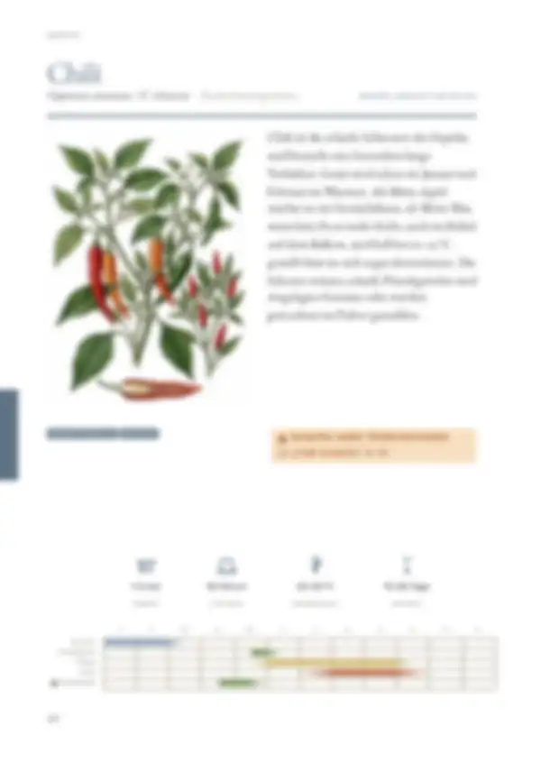
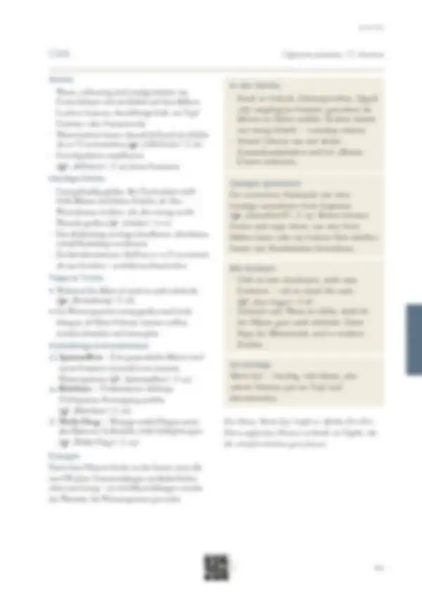

Tippe eine Quelle an, um zu sehen, wo sie verwendet wird – oder tippe auf einen Bereich der Seite.
12 Quellen dieser Doppelseite
Original · abgerufen am 26.10.2026 · ● belegtVerwendet in: Zusammenfassung (Seite allgemein), Monatsleiste, Anbau, Anbau, Punkt 2
Original · abgerufen am 28.10.2026 · ● belegtVerwendet in: Zusammenfassung (Seite allgemein), In der Küche, Häufige Fehler, Häufige Fehler, Punkt 1, Schädlinge & Krankheiten, Schädlinge & Krankheiten, Punkt 2, Schädlinge & Krankheiten, Punkt 3
Original · abgerufen am 26.10.2026 · ● belegtVerwendet in: Zusammenfassung (Seite allgemein), Sicherheitshinweis „Chili-Schärfe“, Mit Kindern
Original · abgerufen am 26.10.2026 · ● belegtVerwendet in: Zusammenfassung (Seite allgemein), Sicherheitshinweis „Chili-Schärfe“, In der Küche, Mit Kindern
Original · abgerufen am 28.10.2026 · ◐ ErfahrungVerwendet in: Zusammenfassung (Seite allgemein), Piktogramm-Leiste, Monatsleiste, Anbau, Anbau, Punkt 2, Anbau, Punkt 3, Häufige Fehler, Häufige Fehler, Punkt 2
Original · abgerufen am 26.10.2026 · ◐ ErfahrungVerwendet in: Zusammenfassung (Seite allgemein), Piktogramm-Leiste, Häufige Fehler, Häufige Fehler, Punkt 3, Tipps & Tricks, Tipps & Tricks, Punkt 2, Schädlinge & Krankheiten, Schädlinge & Krankheiten, Punkt 1, Düngen, Düngen, Punkt 1
Original · abgerufen am 26.10.2026 · ◐ ErfahrungVerwendet in: Zusammenfassung (Seite allgemein), Saatgut gewinnen
Original · abgerufen am 26.10.2026 · ◐ ErfahrungVerwendet in: Zusammenfassung (Seite allgemein), In der Küche, Saatgut gewinnen, Mit Kindern, Tipps & Tricks, Tipps & Tricks, Punkt 1
Original · abgerufen am 26.10.2026 · ◐ ErfahrungVerwendet in: Zusammenfassung (Seite allgemein), Piktogramm-Leiste, Monatsleiste, Anbau, Anbau, Punkt 1, Anbau, Punkt 3, Häufige Fehler, Häufige Fehler, Punkt 1, Sortentipp, Düngen, Düngen, Punkt 1
Original · abgerufen am 26.10.2026 · ● belegtVerwendet in: Zusammenfassung (Seite allgemein), Schädlinge & Krankheiten, Schädlinge & Krankheiten, Punkt 1, Schädlinge & Krankheiten, Punkt 2, Schädlinge & Krankheiten, Punkt 3
Original · abgerufen am 26.10.2026 · ◐ ErfahrungVerwendet in: Zusammenfassung (Seite allgemein), Geschichte, Seite allgemein
Original · abgerufen am 26.10.2026 · ◐ ErfahrungVerwendet in: Zusammenfassung (Seite allgemein), Piktogramm-Leiste, Monatsleiste, Anbau, Anbau, Punkt 1, Anbau, Punkt 2, Düngen, Düngen, Punkt 1
● belegt (Versuch, Fachinstitut) · ◐ Erfahrung (Beratung, Praxis) · ○ Überlieferung. Abschnitte ohne eigene Quellenangabe in den Daten zeigen die Quellen der ganzen Seite („Seite allgemein“).